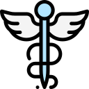

<mat-sidenav-container class="sidenav-container">
  <mat-sidenav #drawer class="sidenav" fixedInViewport
      [attr.role]="(isHandset$ | async) ? 'dialog' : 'navigation'"
      [mode]="(isHandset$ | async) ? 'over' : 'side'"
      [opened]="(isHandset$ | async) === false">
    <mat-toolbar id="sidenav-toolbar">
      
      TIBU
    </mat-toolbar>
    <mat-nav-list>
      <a mat-list-item [routerLink]="['home']" routerLinkActive="router-link-active" >
        Dashboard
      </a>
      <a mat-list-item [routerLink]="['tests']">
        Tests
      </a>
    </mat-nav-list>
  </mat-sidenav>
  <mat-sidenav-content>
    <mat-toolbar id="content-toolbar">
      <button
        type="button"
        aria-label="Toggle sidenav"
        mat-icon-button
        (click)="drawer.toggle()"
        *ngIf="isHandset$ | async">
        <mat-icon aria-label="Side nav toggle icon">menu</mat-icon>
      </button>
      <span id="toolbar-spacer"></span>
      <button mat-raised-button class="mr-3" (click)="logout()">Logout</button>
    </mat-toolbar>
    <!-- Router outlet goes here after establishing child component paths-->
    <router-outlet></router-outlet>
  </mat-sidenav-content>
</mat-sidenav-container>
